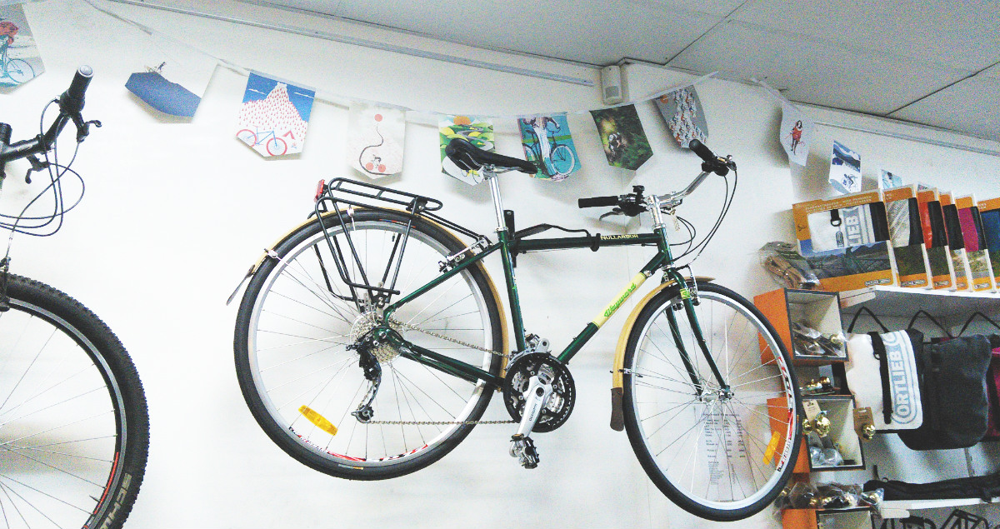

Passion now, study later
Towards the end of my US trip, I was excited to come back to Sydney.
I was motivated to change my lifestyle and pursue activities that I’ve always wanted to do. So I decided to defer my studies in Masters of Architecture for this semester whilst continuing to work four days a week. With three days a week free and a decrease in stress level, I’m going to invest my energy into activities that really interests me right now – coding, acting and cycling.
Coding
I’m learning Ruby and Ruby on Rails because
- I want to create a start-up in the future
- I think I’ll be good at it
- I have this weird idea that it is some kind of a meditative activity – sitting in a cafe, listening to music and figuring out little problems, sort of like sudoku.
So I have been learning bits of Ruby and Ruby on Rails and like everyone says, I find the language very clean. But let's not jump to conclusions - it is still very, very hard. My short term aim is to renew my dearandrewkim.com website. Then if I feel confident enough with the language, I'll try to create a fun start-up and transform my stupid ideas into reality (well at least in the digital world).
Acting (enrolled)
I enrolled in an acting school in Redfern and will be starting in a couple of weeks. I’ve always wanted to try it as a self-development activity to gain confidence and improve my communication skills. However, who knows? Maybe I'll discover my talent for crying on stage causing everyone else to cry? Then maybe I'll pack my bags and fly to Hollywood to pursue acting?
Cycling (Not yet cycling but very determined.)
I am a firm believer of designing cities to be more people and bike friendly. However I’ve never been able to practise what I preach because cycling in Sydney is in fact terrifying – the drivers are crazy and the roads are thin and hilly. I think that it’s easier to cycle in New York because the cars are often gridlocked, the terrain is quite flat and pedestrians really do own the roads.
Then I realised what has been preventing me from cycling were just excuses. If I tried hard enough, I think I'll be able to find a safe route when I cycle to work.
I will be purchasing my bike sometimes this week. But until I actually start riding and see how it is, I will be screaming loud and proud that cities should be built for people not cars.